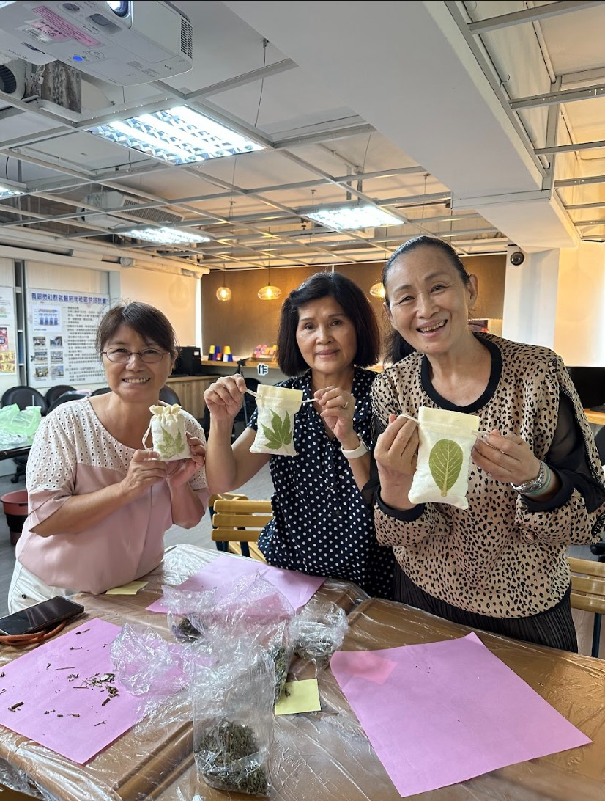
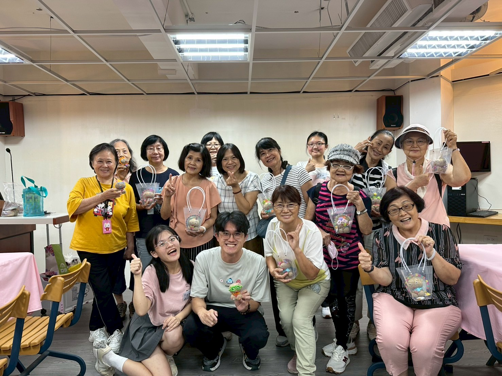
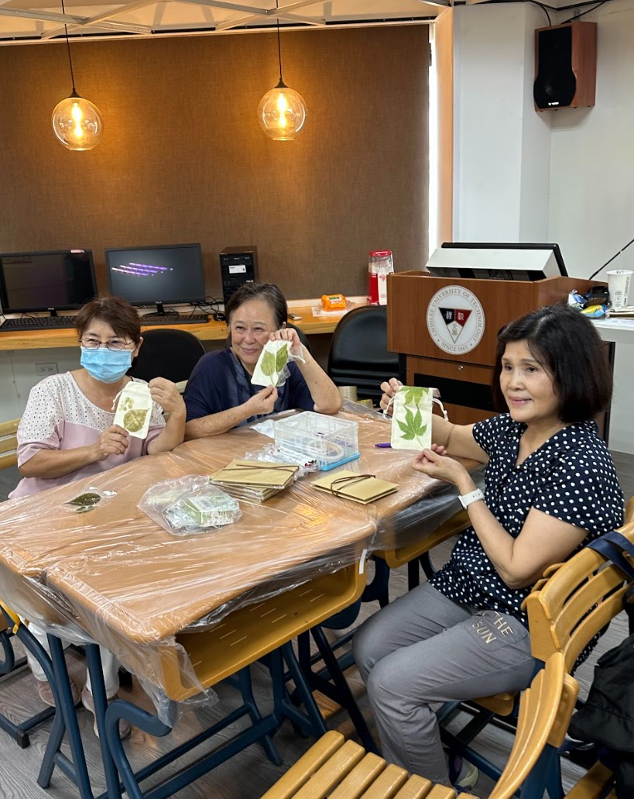

我們記錄每一場活動，因為每一雙參與的手，都值得被記住。

親手體會薄荷、迷迭香、羅勒，了解各種香草的療癒特性與日常應用，將清香帶回家中。

發揮創意，打造自己獨一無二的草頭娃娃。陪伴著自己的草頭娃娃長大，紀錄的同時也療癒心靈。

採集新鮮植葉，透過槌打拓印的方式，將植物的顏色與紋理永久留存在布料上。
以雙手感受土壤與苔蘚的觸感，將植物包裹成圓潤的球形，是一堂讓學員深度接觸大地的療癒體驗。完成的苔球各個充滿生命力。
以洋蔥皮、茶葉等廚房常見食材提取天然色素，為棉布手帕染上溫柔的大地色彩，每件作品都是獨一無二的色彩故事。
選用台灣在地的乾燥花材，以押花技法製作充滿溫度的手作卡片。這是我們第一場正式公開課程，也是一切的起點。
想讓我們將療癒手作帶到你的場域？